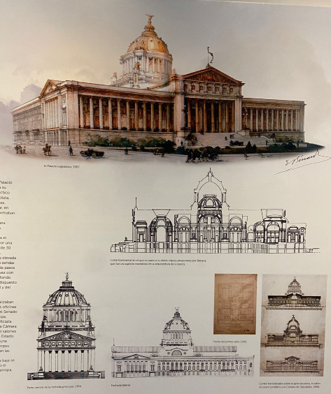
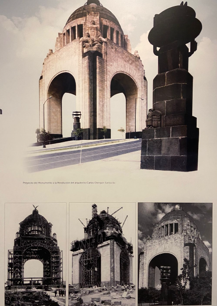
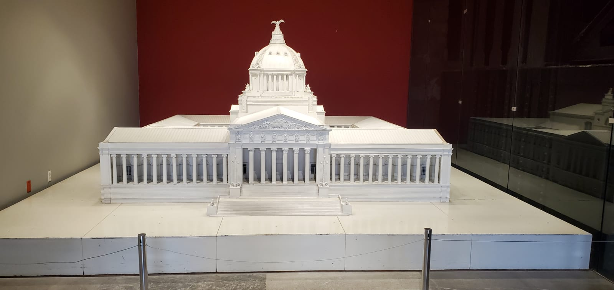

Sala 1 - Museo de Sitio (1876-1911)
Museo de Sitio
1876 - 1911
Esta sala presenta la historia y arquitectura del Monumento a la Revolución, desde su concepción original como Palacio Legislativo durante el Porfiriato hasta su transformación en el emblemático monumento que conocemos hoy.
El proyecto original fue diseñado por el arquitecto francés Émile Bénard en 1897 para ser el Palacio Legislativo. La obra quedó inconclusa debido a la Revolución Mexicana, dejando una estructura de acero que más tarde se convertiría en símbolo de transformación nacional.
En 1933, el arquitecto Carlos Obregón Santacilia propuso transformar la estructura en un monumento conmemorativo de la Revolución Mexicana. La obra se inauguró en 1938, convirtiéndose en un ícono arquitectónico de la Ciudad de México.

Boceto original

Monumento terminado

Construcción del monumento